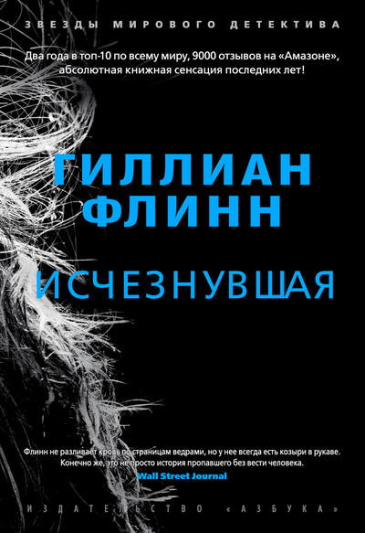
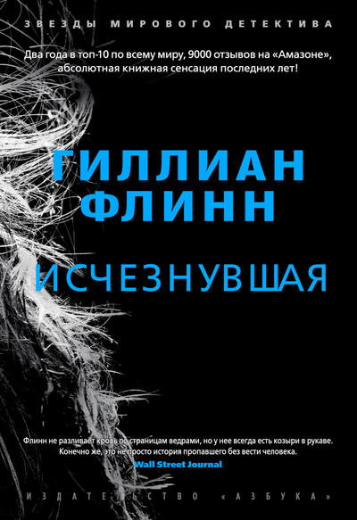
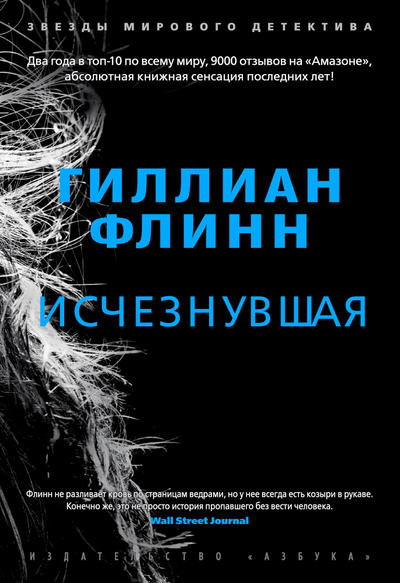
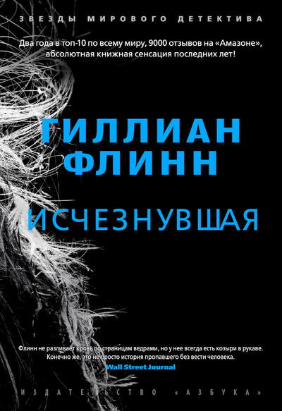

Все было готово для празднования пятилетнего юбилея супружеской жизни, когда вдруг необъяснимо пропал один из виновников торжества. Остались следы борьбы в доме, кровь, которую явно пытались стереть, - и цепочка "ключей" в игре под названием "охота за сокровищами"; красивая, умная и невероятно изобретательная жена ежегодно устраивала ее для своего обожаемого мужа. И похоже, что эти "ключи" - размещенные ею тут и там странные записки и не менее странные безделушки - дают единственный шанс пролить свет на судьбу исчезнувшей. Вот только не придется ли "охотнику" в процессе поиска раскрыть миру и пару-тройку собственных малосимпатичных тайн?
Серия: Звезды мирового детектива
Издательство: Азбука
ISBN: 978-5-389-05160-7
Год издания: 2013
Язык: Русский
Переводчик: Владислав Русанов
Твердый переплет, суперобложка, 512 стр.
Формат: 60x90/16 (145х217 мм)
Возрастные ограничения: 16+
Жанры: №66 в Зарубежные детективы, №29 в Триллеры, №11 в Современные детективы